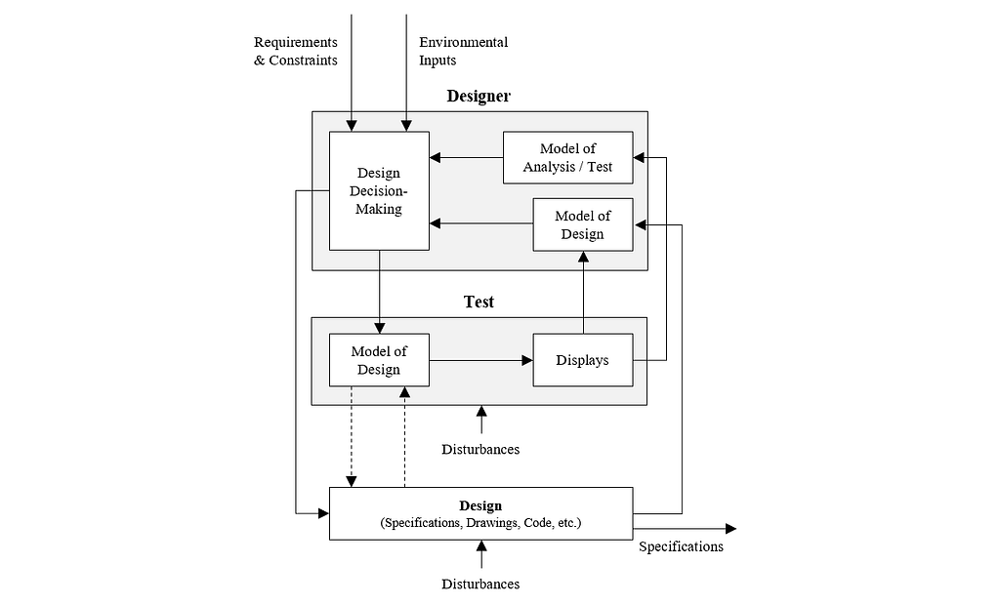
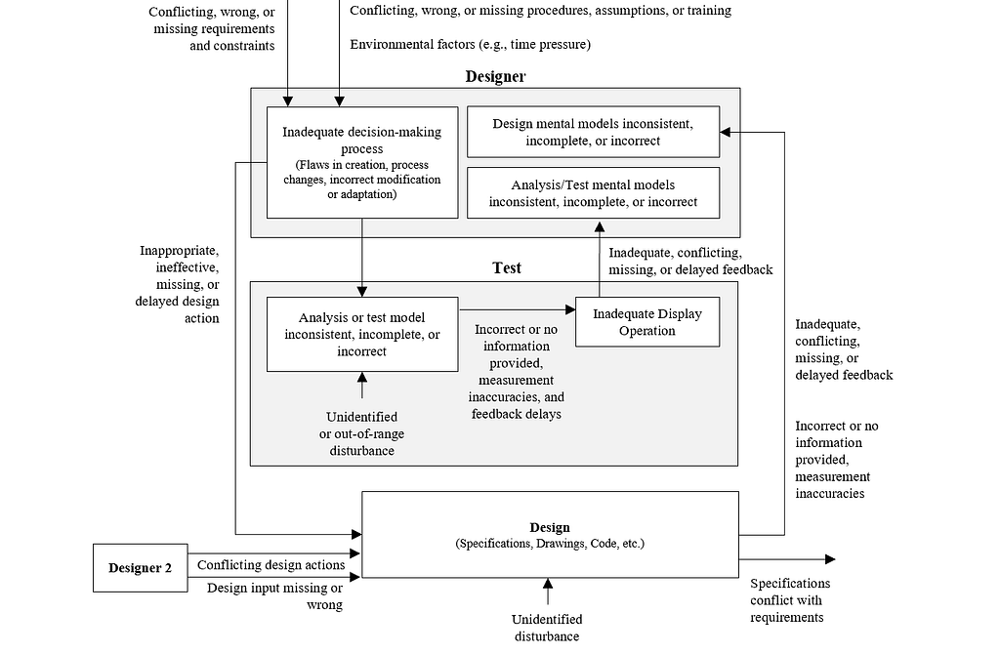

Why Engineers Fail When Building New Things
Most engineering failures aren't knowledge problems. They're feedback problems.
When an engineering project goes sideways, the post-mortem almost always lands on the same answer. Somebody didn't know something.
Well, sure. Of course they didn't. When you're building something new, there are always things you don't know. That's kind of what "new" means.
The real question isn't what the engineers didn't know. It's why it took them so long to find out.
Allow me to drag out the most hackneyed example in all of engineering, the Tacoma Narrows Bridge.
The bridge used a new design, with plate girders supporting the roadbed instead of a truss. During construction, the engineers found that the deck swayed in the wind in ways they hadn't expected. The bridge opened anyway. Four months later it shook itself apart from aeroelastic flutter, a failure mode the new design made possible and nobody's experience covered.
A fix was in the works. It came a few days too late.
Nobody on that project was stupid. What they believed about the bridge and what the bridge was actually doing got further and further apart, and the signal that would have told them so showed up after it could do any good.
Most engineering failures aren't knowledge problems. They're feedback problems.
To be clear, I'm not talking about every project. Some projects are close enough to stuff you've built before that rules of thumb will carry you. This is about the other kind, where the technology is new, the environment is complex, and there isn't a lot of prior experience to lean on. On those projects, the whole job is finding your unknown-unknowns as fast as you possibly can.
Your engineering process is a control system
If you want to prevent mistakes, it helps to have a theory of how they happen. Luckily, safety engineering has already done a lot of the hard thinking for us. My favorite version comes from Nancy Leveson at MIT.
Accidents occur from inadequate constraints on a system's behavior.
Look at what's not in there. Nothing about broken parts. Nothing about bad people. An accident is a control problem. The system was allowed to do something it shouldn't, and nothing stopped it.1
Turns out this works for design errors too. Picture the engineering process as a control loop, with a designer, the design itself, and some test that checks whether the design does what it's supposed to.

The designer is the controller. She takes in requirements and constraints, makes a change, and looks at what comes back from the design and the test. Then she uses her judgment to make the next change, and so on, until the requirements are met.
A design error is what you get when this loop is broken somewhere. Which means that instead of asking "who didn't know what?", you get to ask a much more useful question. Where is the loop broken?
There are only so many ways a loop can break
Here's the full map.

And I do mean full. This isn't my personal list of greatest hits. John Thomas, who co-wrote the STPA handbook with Nancy, formalized this and showed that these categories cover every way a control loop can fail.2 That's what makes it useful. You aren't brainstorming what might go wrong. You're working through a finite list.
Admittedly, the figure is a lot. (Safety people have never met a diagram they couldn't add six more arrows to.) But it boils down to five themes.
1. One part changes and nobody tells the rest
I call this asynchronous evolution. One part of the design changes, and the parts that depend on it don't.
On a fast-moving project, this is basically guaranteed. Requirements are fuzzy when design starts, and they depend on the design itself, so they move as the design moves. That conflict is healthy! It's how you converge. The conflict that hurts you is the one nobody ever resolves, because nobody noticed it.
And it happens even when every individual change is careful. A perfectly well-designed part can change its behavior, and nobody downstream finds out until something else breaks.
2. Your mental model is wrong (and you don't know it yet)
We love to blame errors on a lack of knowledge. But on a new project, not knowing things is the starting condition, not the failure. What matters is how fast you learn.
Errors spread when your mental model and reality start to diverge. And reality is in no hurry. It waits. Then it catches up with you all at once, usually in the most expensive way possible.
Tacoma Narrows, again. The motion showed up during construction. The fix showed up after the collapse.
This starts before design even begins. Every requirement carries assumptions about how the design will work. If the people writing the requirements and the people designing to them have different pictures in their heads, you've got a flaw on day one, and nobody knows it's there.
3. Your test is not the real thing
Every test is different from real operation in some way.
The test article is a few revisions behind. The test conditions don't quite match the real ones. The software has more edge cases than you could ever test before release. The analysis makes simplifying assumptions (all analysis does; that's what analysis is).
None of that is a problem on its own. It becomes a problem when you forget the gap is there and treat a passing test like proof.
4. Nobody knows whose job it is
Put enough people on one project and their changes start running into each other.
The bigger the design and the org, the worse this gets. Changes fall through the cracks ("I thought you were going to do that!"). Responsibility gets spread so thin that nobody actually owns the decision. Two teams get conflicting direction, and both of them follow it to the letter.
5. The feedback is slow, weak, or missing
No control system, engineered or human, can do better than its feedback.
Engineers can't make good decisions with bad information. Sometimes the org's processes just don't get feedback to the person who needs it. Sometimes it's human stuff, like clashing communication styles, defensiveness, or the reviewer who doesn't want to be the one to say it out loud.
This is the big one, because it makes the other four worse. Slow feedback lets designs get out of sync, makes coordination harder, and widens the gap between what you believe and what your tests can tell you.
So what do you do about it?
If you take the control-system view seriously, a few things follow. Some of them cut against how most programs are run.
Testing is anything that closes the loop
Most people hear "test" and picture a big prototype or a gate review. Those are the slowest, most expensive kinds of feedback money can buy. There's tons of cheap feedback lying around, if you go looking for it. Ask a peer to review your work. Learn how the system next to yours works, beyond what you strictly need. Hack together a quick tool that checks you're on the right path.
And when you find rework, don't shove it aside to protect the schedule. I know that's the instinct. The project dynamics say it's backwards. Put more effort into finding rework, not less.
The newer the thing, the earlier you test
In aerospace we say "test like you fly" and "test early and often." They sound like something you'd put on a poster. But through this lens, they're just control theory. The closer a test matches real conditions, the better your next change will be. The earlier it happens, the fewer errors leak into other people's designs.
My rule of thumb is that the further a project is from anything you've done before, the earlier you should be testing.
Yes, extra tests make the plan look longer on paper. In practice they usually make it shorter, because nearly everyone underestimates what errors cost. Rework creates more rework.
Audit your own loop
People settle into a way of working and stop noticing that their loop needs to change as the project changes. Every so often, it's worth asking yourself a few questions.
- What assumptions does my design really depend on? How will I know when they change?
- What are the most expensive errors that could slip in without anyone noticing?
- Are the requirements on my design the right ones? How could they change, and how will I find out?
- Are the requirements my design puts on other people the right ones? What happens to them if mine change?
- How different is my test from reality, and how could that difference mislead me?
- How fast am I finding things out? Is that fast enough?
Stop pretending it's a straight line
Every schedule draws engineering as a straight line. It never is. It's messy, iterative, and full of backtracking. Designs start with missing information. Tests don't match reality. Someone else's change invalidates your inputs, and nobody tells you.
None of that means the project is going badly. That is the project. The teams that do well stop being surprised by it and build their process around it.
You are going to be wrong. The only question is how soon you find out.
- Nancy's model of accidents is called STAMP, and the hazard analysis method built on it is STPA. I co-wrote a paper applying it to space launch vehicles; the figures in this essay are adapted from it. ↩
- Thomas's formalization is what takes STPA from "here are some things that can go wrong" to "here is everything that can go wrong." That's the difference between a list of things to worry about and a proof that you haven't missed any. ↩